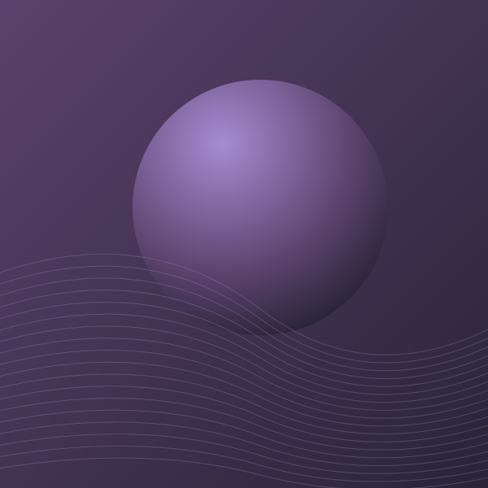

EM DESTAQUE · PLAYLIST EDITORIAL
O mundo abranda.
O som fica.
Texturas eletrónicas, vozes próximas e noites sem pressa. Encontra o teu lugar entre as frequências.
6 faixas · 20 min

DEPOIS DAS HORAS / ONDA SELECTSSINTONIZA O TEU MOMENTO
Há uma onda para ti.
ESCUTA ATENTA
Na tua frequência
Pequenas descobertas que merecem ficar.
Ainda está tudo em silêncio.
Demo local · artistas fictícios. O player gera uma textura sonora sintetizada, sem gravações nem serviços externos.